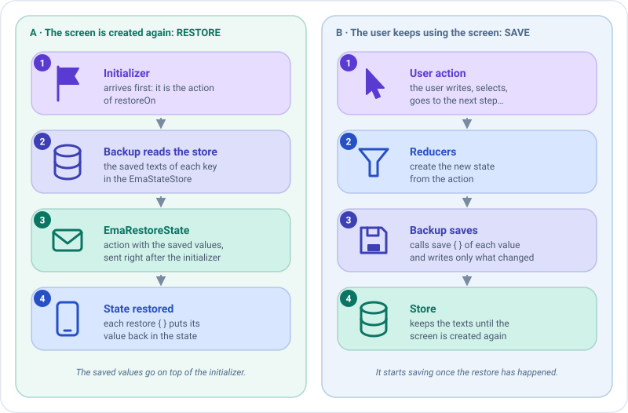

Sobrevivir a la muerte del proceso¶
En algunas plataformas, como Android, el sistema puede matar tu app mientras está en segundo plano, por ejemplo mientras el usuario va a los ajustes a conceder un permiso. Cuando el usuario vuelve, la pantalla se crea de nuevo con su inicializador, pero lo que el usuario había escrito se pierde.
Emanate lo resuelve con un backup: un plugin que guarda las partes del estado que elijas cada vez que cambian, y las restaura cuando la pantalla se crea de nuevo. El ViewModel sigue siendo Kotlin puro: la plataforma solo le da el almacén donde se guardan los valores.
class ProfileCreationViewModel(
private val addFriendUseCase: AddFriendUseCase,
initialDataState: ProfileCreationState,
private val stateStore: EmaStateStore
) : EmaViewModel<ProfileCreationState, ProfileCreationAction, ProfileCreationEvent>(initialDataState) {
override fun setup() = source {
plugins {
add(backupOf(stateStore) {
add(
key = "form",
codec = json(),
save = { ProfileCreationForm(name, surname) },
restore = { form -> copy(name = form.name, surname = form.surname) }
)
})
}
reducers { /* ... */ }
}
}
@Serializable
data class ProfileCreationForm(val name: String, val surname: String)
Eso es todo. No hay callbacks de guardado, ni SavedStateHandle, ni código Android en el ViewModel.
El store¶
EmaStateStore guarda los valores como texto. Cada plataforma decide dónde: en Android, Emanate da a cada pantalla un
store sobre el SavedStateHandle de su destino, y la función viewModel de la pantalla lo recibe, así que pásaselo al
ViewModel.
emaScreen(
screenContent = ProfileCreationScreenContent(),
viewModel = { store -> get<ProfileCreationViewModel> { parametersOf(store) } },
onEvent = { /* ... */ }
)
Con Koin, pásalo como parámetro. Mira Inyección de dependencias. Donde
no hay nada que guardar, por ejemplo en plataformas que no matan el proceso, pasa EmaStateStore.None.
Cuándo se restauran los valores¶
Dos piezas lo deciden: restoreOn, cuándo restaura el backup, y EmaRestoreState, cómo llegan los valores.

restoreOn: la acción que dispara la restauración¶
El backup restaura los valores justo después de la primera acción de tipo restoreOn. Por defecto es el
inicializador, que el ViewModel siempre recibe cuando se crea su pantalla. Así el inicializador no
puede sobrescribir lo que escribió el usuario: se aplica primero, y los valores guardados encima.
Cámbialo solo si tu pantalla no está lista tras el inicializador
Pasa otro tipo de acción al backup: backupOf(stateStore, restoreOn = ScreenOpened::class). Hasta que llega esa
acción el backup ni restaura ni guarda: espera para que el estado inicial no pueda sobrescribir los valores
guardados. Una pantalla que nunca la recibe nunca se restaura, y su estado nunca se guarda.
EmaRestoreState: la acción con los valores guardados¶
Los valores llegan como una acción EmaRestoreState, que pasa por los middlewares y reducers como cualquier otra. No
tienes que gestionarla: cada función restore ya ha puesto su valor en el estado. Gestiónala solo si el estado
restaurado necesita algo más, por ejemplo validar de nuevo el formulario:
reducers {
add<EmaRestoreState> { state.copy(canCreate = state.name.isNotBlank()) }
}
Instala el backup antes de esos reducers
El backup debe haber restaurado sus valores cuando se ejecutan los reducers de EmaRestoreState, así que escribe
plugins { } antes de reducers { }.
Los valores¶
Cada valor tiene una clave única, una función que lo lee del estado y otra que lo devuelve a él:
En backupOf { } |
Guarda |
|---|---|
add(key, save, restore) |
Un String. |
add(key, codec, save, restore) |
Un valor de cualquier tipo, convertido a texto con un EmaBackupCodec. |
add(value) |
Un valor ya creado. Acepta varios, o una colección. |
save devuelve null para no guardar nada. Los valores se restauran en el orden en que se añaden.
Codecs¶
| Codec | Módulo | Guarda |
|---|---|---|
EmaBackupCodec.Text |
emanate-core |
Texto tal cual. |
json() |
emanate-serialization |
Cualquier clase @Serializable o tipo básico, en JSON. Dentro de add, el tipo se toma de save; en otros sitios escríbelo: json<ProfileCreationForm>(). |
Tu propio EmaBackupCodec |
Tu código | Cualquier cosa, por ejemplo un enum por su nombre. |
dependencies {
implementation("com.github.carmabs.ema:emanate-serialization:$emanateVersion")
}
Un valor que no se puede decodificar, por ejemplo uno guardado por una versión anterior de la app con otros campos, no se restaura: la pantalla mantiene su estado inicial.
Ejemplos¶
1. Guardar un solo texto¶
El caso más sencillo: un String y ningún codec. save lo lee del estado y restore lo devuelve a él.
add(backupOf(stateStore) {
add(
key = "search",
save = { query }, // lo que se guarda cada vez que cambia el estado
restore = { saved -> copy(query = saved) } // cómo se reconstruye el estado con él
)
})
2. Guardar varios campos como un solo valor¶
Agrupa los campos en una clase @Serializable y usa json(). Una clave, un valor, sin importar cuántos campos haya.
@Serializable
data class SignUpForm(val email: String, val acceptedTerms: Boolean)
add(backupOf(stateStore) {
add(
key = "form",
codec = json(),
save = { SignUpForm(email, acceptedTerms) },
restore = { form -> copy(email = form.email, acceptedTerms = form.acceptedTerms) }
)
})
3. Guardar varios valores independientes¶
Añade un valor por cada cosa, con su propia clave. Se restauran en el orden en que se añaden.
add(backupOf(stateStore) {
add(key = "name", save = { name }, restore = { copy(name = it) })
add(key = "surname", save = { surname }, restore = { copy(surname = it) })
})
4. No guardar nada en algunos casos¶
save devuelve null para no guardar nada: el valor se elimina del store, así que no hay nada que restaurar. Aquí el
email se guarda solo cuando el usuario ha escrito algo.
add(
key = "email",
save = { email.takeIf { it.isNotBlank() } },
restore = { saved -> copy(email = saved) }
)
5. Guardar un tipo con tu propio codec¶
Para cualquier cosa que no sea texto ni @Serializable, escribe un EmaBackupCodec: encode convierte el valor en
texto y decode lo convierte de vuelta, devolviendo null si el texto no es válido.
enum class Tab { Home, Settings }
val tabCodec = object : EmaBackupCodec<Tab> {
override fun encode(value: Tab) = value.name
override fun decode(value: String) = Tab.entries.firstOrNull { it.name == value }
}
add(key = "tab", codec = tabCodec, save = { tab }, restore = { copy(tab = it) })
6. Restaurar con otra acción¶
Por defecto los valores se restauran después del inicializador. Si tu pantalla está lista tras otra
acción, díselo al backup con restoreOn:
add(backupOf(stateStore, restoreOn = ScreenOpened::class) {
add(key = "name", save = { name }, restore = { copy(name = it) })
})
7. Juntarlo todo¶
Una pantalla completa: el ViewModel instala el backup, y la pantalla le pasa el store.
class SignUpViewModel(
initialDataState: SignUpState,
private val stateStore: EmaStateStore
) : EmaViewModel<SignUpState, SignUpAction, SignUpEvent>(initialDataState) {
override fun setup() = source {
plugins {
add(backupOf(stateStore) {
add(
key = "form",
codec = json(),
save = { SignUpForm(email, acceptedTerms) },
restore = { form -> copy(email = form.email, acceptedTerms = form.acceptedTerms) }
)
})
}
reducers {
add<SignUpAction.EmailWritten> { state.copy(email = action.email) }
add<SignUpAction.TermsToggled> { state.copy(acceptedTerms = !state.acceptedTerms) }
}
}
}
// En la pantalla (Android)
emaScreen(
screenContent = SignUpScreenContent(),
viewModel = { store -> SignUpViewModel(SignUpState.DEFAULT, store) },
onEvent = { /* ... */ }
)
El flujo es: el usuario escribe el email, el backup guarda el formulario; el sistema mata el proceso; el usuario vuelve, la pantalla se crea y llega el inicializador; el backup restaura el formulario encima. El usuario ve el email de nuevo.
Testearlo¶
emanate-test tiene un store en memoria. Pásalo a un ViewModel y luego a uno nuevo, para simular la muerte del proceso:
el nuevo restaura lo que guardó el primero.
@Test
fun `the form survives the death of the process`() = runTest {
val store = testStateStore()
val first = ProfileCreationViewModel(AddFriendUseCase(FakeFriendsRepository()), ProfileCreationState.DEFAULT, store)
first.onCreated()
first.dispatch(ProfileCreationAction.UserNameWritten("Ana"))
val restored = ProfileCreationViewModel(AddFriendUseCase(FakeFriendsRepository()), ProfileCreationState.DEFAULT, store)
restored.onCreated()
assertEquals("Ana", restored.stateFlow.value.name)
}
store.values muestra lo que está guardado, y restoreStateOf("form" to "...") crea el EmaRestoreState para
comprobarlo con assertActions.
Consejos¶
- Guarda solo lo que el usuario perdería: campos de formularios, elementos seleccionados, el paso actual. La plataforma limita el tamaño de los valores guardados.
- No guardes lo que puedes volver a cargar, como las listas de la red: cárgalas de nuevo desde el inicializador.
- Un backup por ViewModel o
EmaSource. Un backup no se puede instalar en dos ViewModels: crea uno en cada uno.